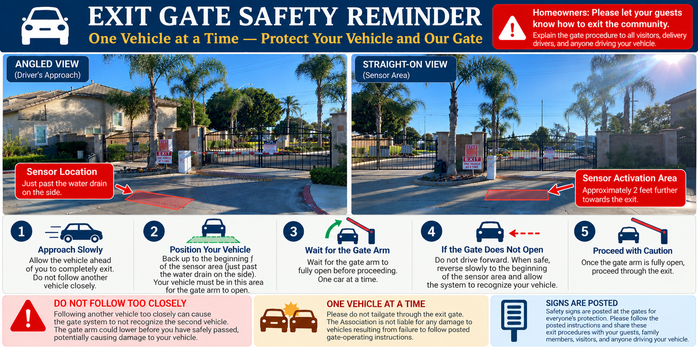
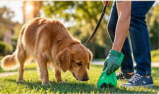

November 2026
Holiday safety, exit-gate awareness, parking compliance, and the everyday courtesies that make Carnelian a welcoming place to call home.
🚘 Exit Gate Safety: One Vehicle at a Time
Protect your vehicle, our gate equipment, and everyone using the exit.

Wednesday Parking: 12–2 p.m.
Residents and guests must follow the posted community parking requirements during the full restricted window. Please plan ahead and use your garage or driveway where applicable.
Security will soon be driving through the community on Wednesdays to monitor and enforce existing parking rules. This is a reminder of current requirements, not a new parking policy.
Review Community Parking Rules →
Pick Up After Your Pets — Every Time
Complaints about pet waste being left behind continue. This must improve. Leaving pet waste on sidewalks, lawns, landscaped areas, or common property is inconsiderate and unsanitary.
- Carry waste bags whenever walking your dog.
- Pick up immediately, every time.
- Place used bags in a suitable trash receptacle.
- Never leave filled bags beside walkways or in landscaping.
Cleaning up after your pet is your responsibility—not your neighbor's or the landscape crew's. Thank you to those who consistently do their part.
Security, Cameras & Vigilance
More deliveries and visitors often mean more activity around the holidays. Help keep Carnelian secure by staying aware of your surroundings.
- Close garage doors and secure vehicles; never leave valuables in plain sight.
- Use exterior lighting and consider a properly positioned doorbell or security camera.
- Collect deliveries promptly and arrange for someone to watch for packages when away.
- Do not allow unfamiliar vehicles to follow you through controlled gates.
- Report suspicious activity to the appropriate authorities; do not confront anyone.
Security cameras can help document activity, but they do not replace attentive residents and safe habits.
Visitors, Decorations & Community Care
We welcome family and friends visiting Carnelian this season. Please remind guests of parking requirements and how to safely operate the exit gate.
- Use outdoor-rated holiday lights and avoid overloaded electrical outlets.
- Keep sidewalks, access routes, and sightlines unobstructed.
- Be considerate of neighbors when using bright lights or hosting gatherings.
- Report malfunctioning common-area lighting, gate equipment, or irrigation to management.
Community Manager: Bryant Sanchez, Optimum Professional Property Management
Phone: (714) 508-9070, Ext. 284
Email: bsanchez@optimumpm.com
Gate photographs are the homeowner-provided images with their red sensor markings. The gate operating instructions and any liability statement should be confirmed with management or the gate vendor before publication. Pet-cleanup illustration is a generated visual.